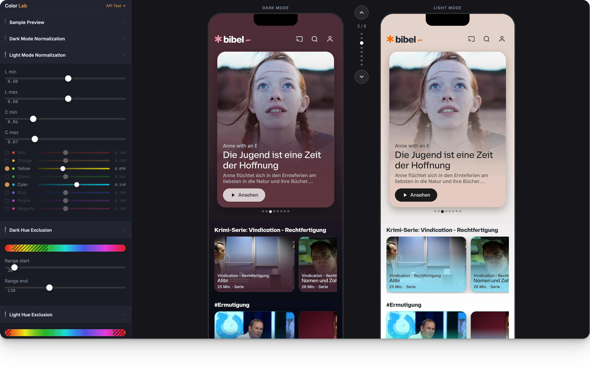
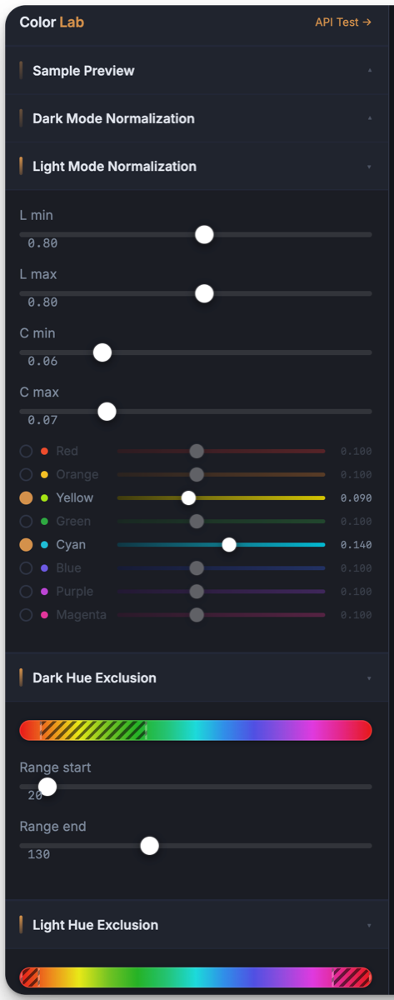
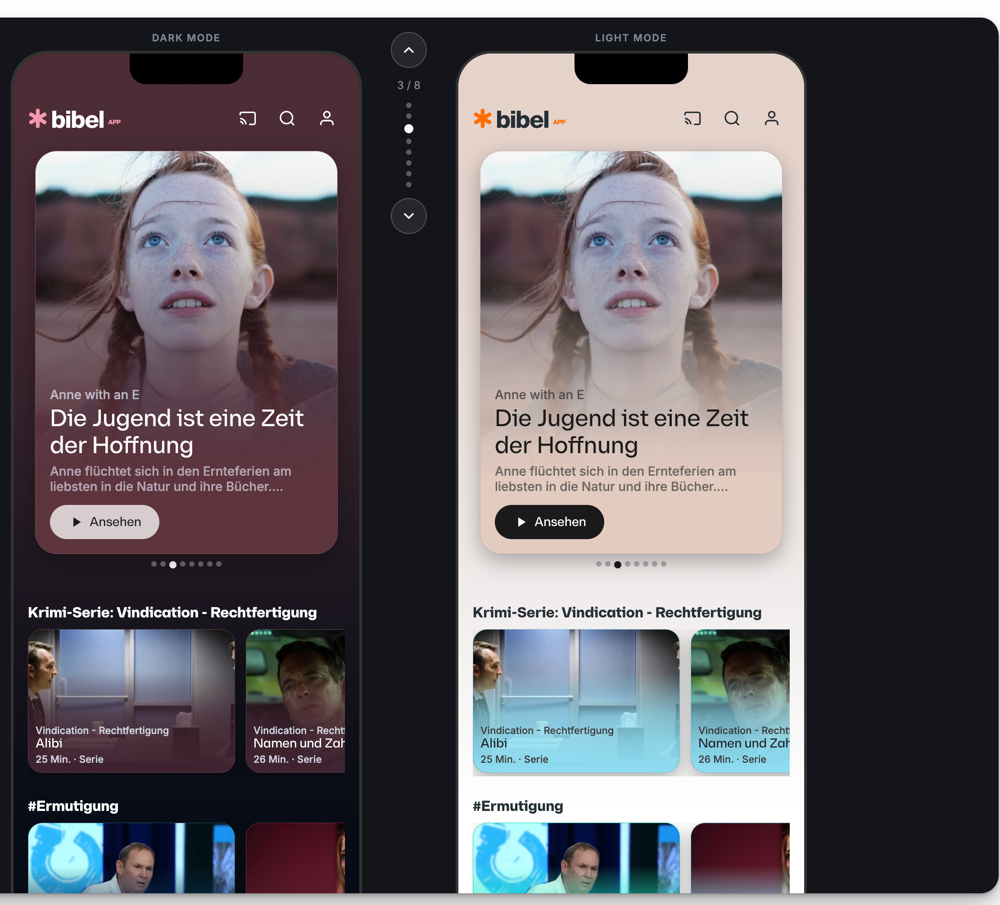

Bibel TV · Color API · 2025
A color engine that automates what bigger streamers do by hand
Ten thousand videos. One color engine.

Bibel TV · Color API · 2025
A color engine that automates what bigger streamers do by hand.
Ten thousand videos. One color engine.

The obvious answer
Automated wasn't the same as right.
"Some cards demanded the page. Others almost disappeared. The artwork didn't decide which — the RGB math did."

The decision
Design kept the thresholds.
Brand calls, not code commits.
Both modes, one artwork


The outcome
Live, on every video.
Every theme clears contrast — nobody checks by hand.
On phones, it goes quiet.
One color, not two.
Case study